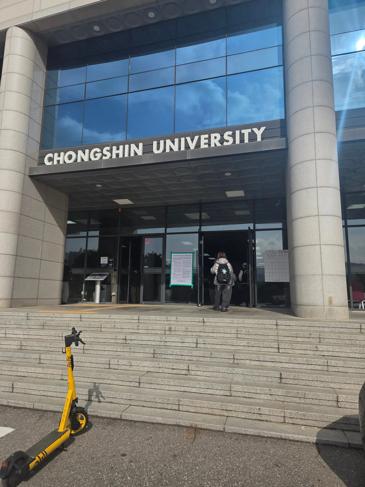
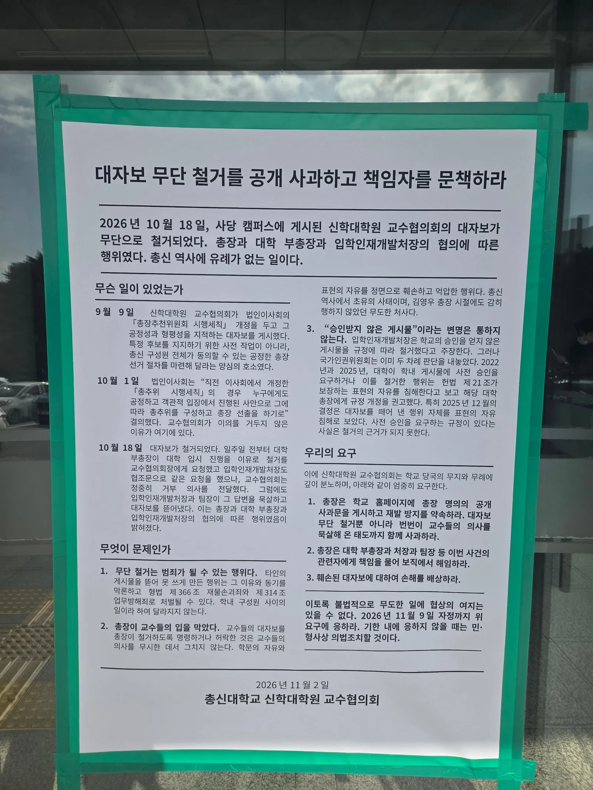

총신 총장 임기 말 쟁점, 교수회가 묻고 기록이 답하다
선거를 앞두고 바뀐 총장 선거 세칙, 해마다 늦춰진 기숙사 완공, 목표에 못 미친 모금까지 교수회가 지적해 온 사안이 공개된 자료로 확인된다.
총신대학교 신학대학원(이하 신대원) 교수회에서 박성규 총장의 학교 운영을 두고 문제를 제기하는 목소리가 이어지고 있다. 대한예수교장로회 총회(이하 예장합동) 직할 학교인 총신대는 2027년 5월 박 총장의 임기 만료를 앞두고 차기 총장 선출 절차에 들어간다. 본지가 교수들이 지적한 사안을 규정 조문과 공개 자료에 대조한 결과, 상당 부분이 문서와 수치로 뒷받침되는 것으로 나타났다.
신대원 교수들의 문제 제기
신대원 교수들은 총장과의 소통이 사실상 끊겼다고 말한다. 교수들에 따르면 회의에서 의견을 내도 총장이 "고견에 감사하다"는 말로 소통을 단절시키는 일들이 많았다고 한다. 신대원 보직을 맡으려는 교수를 찾기 어려운 상황이라는 말도 나온다.
신대원의 H모 교수는 신대원 운영 계획을 묻는 교수의 질문에 총장이 특별한 계획이 없다며 교수들이 생각해 달라고 답했다고 전했다. 사실이라면 참으로 황당한 일이다. 교수들은 최근 교수협의회 대표들의 면담 요청도 충분히 받아들여지지 않았다고 말했다. 교수협의회가 이번 총장 선출에서 한 명의 후보를 함께 지지하는 방안을 논의하고 있다는 것도 교수 측의 전언이다.
이 같은 내용은 교수 측의 전언으로, 당사자 확인은 거치지 않았다. 다만 교수들이 문제 삼아 온 학교 운영 사안들은 규정 조문과 공개된 문서, 수치로 확인할 수 있다. 가장 분명하게 드러나는 것이 총장 선거 규칙의 변경이다.

선거 앞두고 바뀐 선거 규칙
총신대 법인이사회는 7월 30일 '총장추천위원회 시행세칙'(이하 세칙)을 개정했다. 2022년 12월 13일 세칙을 제정한 지 약 3년 7개월 만이다. 바뀐 것은 크게 두 가지다. 보직자가 사퇴해야 하는 시점이 선거 절차의 입구에서 출구로 옮겨졌고, 현 총장은 사퇴 대상에서 빠져 직무대행체제로 전환하게 됐다.
입구와 출구의 차이를 이해하려면 두 용어를 구분해야 한다. '총장후보대상자'는 지원 서류를 낸 사람 가운데 자격과 결격 사유, 서류 구비 여부만 확인받은 사람이다. '총장후보자'는 심사와 투표를 모두 거쳐 3명으로 압축돼 공표되고 최종 보고서까지 이사회에 제출된 사람이다. 세칙은 이 시점에 추천위원회 활동이 실질적으로 종료된다고 적고 있다.
- 사퇴 대상 — 현행은 이사회 임원, 총장, 부총장, 평의원회 의장, 처장 등이다. 개정 세칙은 여기서 총장을 뺐다.
- 사퇴 기산점 — 현행은 총장후보대상자로 확정된 때(입구), 개정 세칙은 총장후보자로 공표된 때(출구)다.
- 사퇴 기한 — 7일 이내에서 5일 이내로 줄었다.
- 총장의 경우 — 현행은 다른 보직자와 같이 사퇴한다. 개정 세칙은 후보자 공표 다음 날부터 직무대행체제로 전환하고, 차기 총장이 선출된 다음 날부터 현 총장이 직무를 재개하도록 했다.
- 조문 — 현행 제14조 ④항을 삭제하고 제19조 ④항을 새로 만들었다.
기한만 보면 7일에서 5일로 짧아졌다. 그러나 기한을 세는 시작점이 절차 끝으로 옮겨지면서, 후보는 서류 심사부터 투표까지 전 과정을 보직을 유지한 채 치르게 됐다. 현 총장은 후보자로 공표된 뒤에도 사퇴하지 않고 직위를 유지한다. 실질적인 차이는 기한의 길이가 아니라 어느 단계에서 물러나느냐에서 생긴다.
이사회의 설명
이사회는 개정 사유로 세 가지를 들었다. 첫째, 후보대상자 단계에서 일찍 사퇴하면 행정 공백이 생기므로 후보 등록 뒤 사퇴하거나 직무대행으로 전환해 공백을 줄인다는 것이다. 둘째, 총장은 보직을 사퇴하면 일반 교직원과 달리 학교 소속 신분을 잃기 때문에 사퇴 대신 직무대행체제로 전환하게 했다는 것이다. 셋째, 총장 보직 사퇴 규정이 서울대와 총신대에만 남아 있었는데 서울대가 2023년에 이를 개정했으므로 흐름에 맞춘다는 것이다.
이사회가 든 사유에는 현실적인 고려가 담겨 있다. 총장이 교원이 아니어서 사퇴하면 학교를 떠나야 한다는 점은 교수협의회도 전제로 인정한다. 이사회는 10월 1일 개정 세칙이 누구에게도 공정하고 객관적인 입장에서 진행된 사안이라며, 이에 따라 추천위원회를 구성하고 총장 선출을 진행하기로 결의했다. 따라서 쟁점은 개정이 필요한지가 아니다. 그 해법을 세칙 개정으로 정해도 되는지, 누가 정하는지, 그리고 지금 적용해도 되는지다.
교수협의회가 제기한 다섯 가지
신대원 교수협의회는 9월 9일 '누구를 위한 개정인가'라는 성명을 내고 개정 철회를 요구했다. 교수협의회는 이번 개정이 공정한 선거를 위협하고 특정인에게 유리하다고 주장하며 다섯 가지 문제를 제기했다.
- 직무대행의 근거 — 정관과 직제 규정에 총장의 직무 정지 조항이 없고, 직무대행은 사망·사고·징계 등 유고 때만 가능하다고 교수협의회는 주장했다. 이사회가 상위 규정을 벗어난 세칙을 정할 권한이 없으며, 다른 보직자는 후보자로 공표되면 직을 잃는데 총장만 지위를 보존하는 것은 형평에 맞지 않는다는 것이다.
- 개정권자와 투표권자의 일치 — 간선제인 총장 선거에서 투표권자는 법인이사회 구성원인데, 세칙을 고치는 주체도 이사회다. 선거 결과를 결정할 사람들이 선거 규칙까지 고쳤다는 지적이다.
- 후보자 공표 전까지의 활동 — 총장은 후보자로 공표될 때까지 법인이사회에 배석하고 학교 자료에 접근하며 전국 교회를 순방할 수 있다. 교수협의회는 총회가 임원 선거 출마자의 후보 등록 전 사전 운동과 교단·교회 행사 참여를 금지하고 있다는 점을 들었다.
- 낙선 후 복귀 — 낙선하더라도 차기 총장 선출 다음 날 직무를 재개하도록 한 조항은 선거 불복이나 후임 총장 업무 방해 같은 갈등의 빌미가 될 수 있다고 주장했다.
- 개정 시점 — 임기 초에 개정했다면 의심이 덜했겠지만, 총장 선거를 몇 달 앞둔 개정은 특정인을 겨냥한 것으로 해석될 수밖에 없다고 밝혔다.
이 가운데 직무대행의 법적 근거는 정관과 직제 규정 원문을 확인해야 판단할 수 있다. 본지는 위법 여부를 판단하지 않고 교수협의회의 주장으로 전한다. 다만 2번과 5번은 조문과 날짜만으로 확인되는 사실이다. 규칙을 고친 주체가 투표권자라는 점, 그리고 개정이 선거를 앞둔 시점에 이뤄졌다는 점은 다툼의 여지가 없다.
서울대 사례가 보여 주는 것
이사회가 근거로 든 서울대 사례는 오히려 다른 선택지를 보여 준다. 교수협의회에 따르면 서울대는 2023년 1월 같은 취지로 총장 사퇴 조항을 개정하면서, 바뀐 규정을 그다음 대 총장부터 적용하도록 했다. 개정의 필요성은 인정하되 현직 총장이 바뀐 규칙의 수혜자가 되지 않도록 적용 시점을 미룬 것이다.
총신대 개정 세칙이 현 총장에게 곧바로 적용되는지는 부칙을 확인해야 한다. 교수협의회는 즉시 적용되는 것으로 해석하고 있다. 개정이 필요하다고 보더라도 적용 시점을 다음 대 총장 선출부터로 조정하면 공정성 논란은 상당 부분 줄어든다. 이사회가 같은 사례를 근거로 들면서 이 부분을 따르지 않은 이유는 설명되지 않았다.
정관 변경과 견제 장치
세칙 개정에서 드러난 '규칙을 정하는 주체'의 문제는 학교법인 정관에서도 이어진다. 정관 제1조(목적)에서 총회와의 관계를 규정한 표현은 시기마다 달라졌다.
- 2013년 — 총회의 지도하에, 본 교단 헌법에 입각
- 2017년 — 총회의 교의적 지도하에(헌법 관련 표현 삭제)
- 2021년 — 총회(합동)의 지도하에, 본 총회 헌법에 입각(복구)
- 2022년 이후 — 총회(합동)의 직할 하에
소수의 재단이사가 중요한 정책을 정하고 바꿔도 총회가 이를 알기 어려운 구조라는 지적이 나온다. 이를 견제할 운영이사회 같은 기구가 필요하다는 의견도 제기됐다. 선거 규칙을 투표권자가 직접 고친 이번 일은 이런 우려가 현실이 된 사례로 거론된다.
철거된 대자보
세칙 개정을 둘러싼 갈등은 대자보 철거로 번졌다. 교수협의회는 9월 9일 성명을 대자보로 만들어 사당캠퍼스에 게시했으나, 대자보는 10월 18일 철거됐다. 교수협의회가 11월 2일 낸 성명에 따르면 대학 부총장이 입시 진행을 이유로 일주일 전부터 교수협의회장에게 철거를 요청했고, 입학인재개발처장도 협조문으로 같은 요청을 했다. 교수협의회가 거부 의사를 전했지만 입학인재개발처장과 팀장이 대자보를 떼어 냈다고 교수협의회는 밝혔다. 교수협의회는 이 일이 총장과 대학 부총장, 입학인재개발처장의 협의에 따른 것이었다고 주장했다.
성명에 따르면 입학인재개발처장은 학교의 승인을 받지 않은 게시물을 규정에 따라 철거했다는 입장이다. 교수협의회는 국가인권위원회가 2022년과 2025년 대학의 게시물 사전 승인 요구와 철거가 표현의 자유를 침해한다고 판단한 사례를 들어 이를 반박했다. 교수협의회는 총장 명의의 공개 사과와 재발 방지 약속, 관련자의 보직 해임, 훼손된 대자보에 대한 손해배상을 요구하며 11월 9일 자정까지 응하지 않으면 민·형사상 법적 조치를 하겠다고 밝혔다. 교수협의회는 현재 고소를 검토하고 있다. 의견을 밝힐 통로마저 막혔다는 것이 교수들의 주장이다.

양지캠퍼스 매각 논의
올해 4월 신대원 양지캠퍼스를 매각하고 사당캠퍼스로 통합하자는 논의가 나오자, 신대원 교수협의회는 4월 2일 반대 성명을 냈다. 교수들은 적자의 원인이 신대원이 아니라 대학 쪽의 구조적 문제에 있다고 주장했다. 약 12만 평 규모의 양지캠퍼스는 용도 변경 시 최대 2조 원의 가치가 있다는 시각도 있다.
매각 논의는 제111회 총회가 매각하지 않기로 결의하면서 일단락됐다. 그러나 박 총장의 공식 입장은 확인되지 않았고, 논의가 완전히 정리되지 않았다는 시각이 남아 있다. 신대원의 기반을 흔드는 결정이 신대원 교수들의 의견 없이 논의됐다는 점에서, 소통이 끊겼다는 교수들의 호소와 맞닿아 있다.
해마다 늦춰진 기숙사 완공
교수들이 문제 삼는 것은 선거 규칙과 소통 방식만이 아니다. 총장의 핵심 공약도 기록과 어긋난다. 기숙사 신축은 박 총장의 대표 공약이다. 한 교계 매체 보도에 따르면 완공 예상 시점은 2023년에 2026년 가을로 제시됐다. 이후 2024년에는 2027년 5월, 2025년에는 2027년 8월, 올해는 2028년 2월로 해마다 늦춰졌다. 기공예배 날짜도 8월과 9월 사이에 한 차례 바뀌어 현재 11월 19일로 잡혀 있다.
현재 계획은 지하 2층, 지상 7층, 연면적 약 9997㎡, 2인 1실 163호실 규모로, 5월 서울시 도시계획위원회 건축심의를 통과했다. 학교는 처음에 국가 예산이 지원되는 '행복기숙사'로 추진하다 이를 포기했다. 박 총장은 예산 부족과 주민 반대, 옹벽 안전 문제를 이유로 들었으나, 부지를 옮겨 추진하는 상황에서 주민 반대와 안전 문제는 설득력이 약하다는 지적이 나온다. 현재 일정대로라면 박 총장 임기 안에 완공은 어렵다. 총신대는 2016년에도 기숙사 신축을 추진했다가 주민 반대와 재정 문제로 중단한 바 있다.
목표에 못 미친 모금
서울시에 보고된 총사업비는 270억 원이고, 기 확보 재원은 188억 원이다. 2024년 1차 '총신사랑 후원의 밤' 이후 약정과 교수·직원·학생 참여분을 합쳐 88억 원이 모였으며, 목회 퇴직금 전액을 기부한 박 총장의 몫도 여기에 포함됐다. 여기에 대학 적립금 100억 원을 더한 구조다.
10월 22일 열린 2차 후원의 밤은 모금 목표를 100억 원으로 잡았다. 그러나 학교 관계자에 따르면 실제 모금액은 20억 원에 못 미쳤다. 1차와 2차 행사 사이 간격이 2년 가까이 벌어진 데다, 후원의 밤 자료에 적힌 사업비 총액 549억 원과 항목별 수치가 서로 맞지 않는다는 지적도 나왔다.
학교 측 설명이 필요한 대목
교수들의 개별 전언만으로 학교 운영 전반을 판단하기는 어렵다. 그러나 선거를 앞둔 세칙 개정과 교수협의회 대자보 철거, 해마다 늦춰진 기숙사 일정, 목표에 크게 못 미친 모금처럼 기록으로 확인되는 사안은 교수들의 문제 제기와 같은 방향을 가리키고 있다. 공통점은 중요한 결정이 구성원과의 충분한 협의 없이 소수에 의해 내려졌다는 것이다.
이 사안들을 정리하려면 이사회와 학교 측이 최소한 다음 물음에 답해야 한다.
- 직무대행의 근거 — 총장의 직무대행체제는 정관과 직제 규정의 어느 조항에 근거하며, 이를 세칙으로 정할 수 있다고 본 이유는 무엇인가.
- 개정 경과 — 이번 개정은 누가 발의했고, 언제 어떤 방식으로 의결했으며, 표결 결과는 어떠했는가.
- 적용 시점 — 개정 세칙은 현 총장에게 곧바로 적용되는가. 서울대처럼 다음 대 총장부터 적용하는 방안은 검토했는가.
- 선거 전 활동 — 후보자 공표 전까지 총장이 법인이사회에 배석하고 대외 일정을 수행하는 데 제한 규정이 있는가.
- 기숙사와 모금 — 완공 시점이 해마다 늦춰진 이유와 549억 원 사업비 자료의 근거는 무엇인가.
이 기사에서 다룬 교수회의 문제 제기에 대한 박 총장 측의 입장은 확인되지 않았다. 총장 선출을 앞두고 이 사안들에 대한 학교 측의 공식 설명이 필요하다는 목소리가 교단 내 동문과 교직원, 교수들 사이에서 나오고 있다. 선거의 공정성은 결과만큼이나 규칙이 정해지는 과정에 대한 신뢰에 달려 있다.
기사 제보: owenpej@naver.com